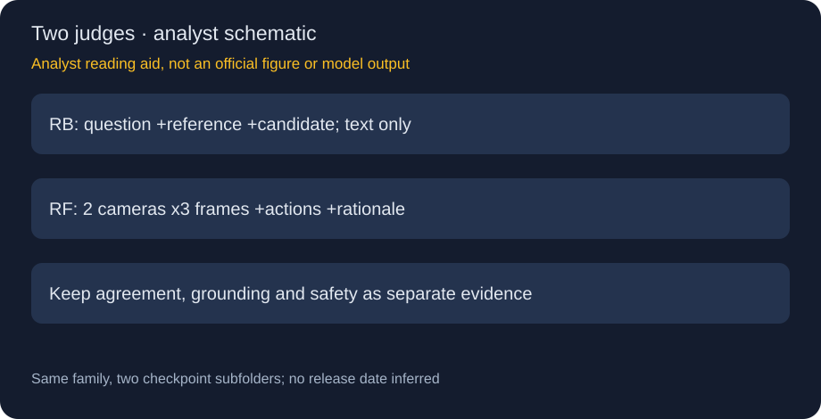
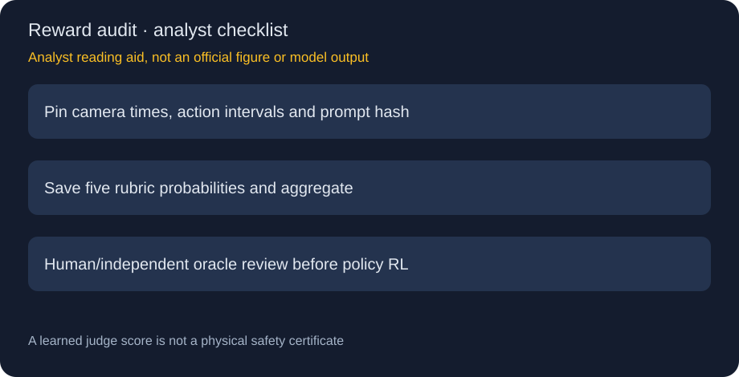

AlpaJudge · RB / RF：把参考一致、场景证据与行动安全拆成不同判断
身份、日期与来源
HF仓库同含reference-based与reference-free，合并一个family叶子。10/22新观察不等于新首发：卡和官方GitHub README未给明确首发日/月，2026-10只作归档线索，不进精确30天表。已归档原卡、两份配置与完整官方推理README，未下载权重或运行示例。

为什么两个judge不能互换
| 模型 | 输入 | 输出 | 最大误读 |
|---|---|---|---|
| RB | question、reference、candidate，无图 | alignment probability | 与参考一致不证明场景正确 |
| RF | 六帧图、动作历史/未来、rationale | 五rubric及action/component/overall | 无参考答案不等于无场景/动作条件 |
RB的驾驶CoT用官方canonical question，普通VQA应保留原题，不要全部替换成驾驶问题。RF评估的是给定rationale与场景/动作契约的关系，不是车辆控制模型，也不能取代闭环驾驶安全验证。
RF具体需要什么
front-wide和front-tele各取-1.0、-0.5、0.0秒三帧，每相机由旧到新，tensor形状[3,C,H,W]，uint8像素或[0,1]float。相机未同步、时间乱序或像素范围错误会改变证据。history/future meta-action用区间字符串包含纵向、横向和车道动作；未来计划输入不代表judge看到了未来真实结果。
核心包没有video decoder或动作抽取管线。PAI notebook固定样本、revision；视觉来自PhysicalAI-AV，rationale与动作窗口是为展示场景人工编写。不能把示例的单次数值当benchmark、阈值或真实控制安全率。
聚合公式与不能丢掉的分项
五概率为action_matches_gt、action_safe、components_grounded、components_complete、component_causal。action等于match×(1+safe)/2；component是三个组成rubric的均值；overall为0.6×action+0.4×component。这是官方soft aggregation，不是本文猜的训练loss。
这一结构意味着safe为0并不自动令overall为0，component还可贡献分数；若安全要求为硬门槛，应另设计拒绝/人工复核策略。卡未给概率校准误差和真实碰撞率，不能把0.9解释成90%安全。需要分别保存分项和聚合，诊断分数被哪一项抬高。

部署协议与缺失的训练证据
官方要求Python3.12/PyTorch2.8，HF账号须具备仓库访问；本轮只读公开材料，不做登录/安装/推理。RF权重加载约5GB，未含activation、图像和KV开销；不能写成完整服务显存5GB。processor验证instruction/prompt-contract哈希，改prompt或预处理要重新标版本。
官方仓库明确不含训练代码或数据管线。没有读取到训练规模、偏好标签、损失系数、测试分割、judge–human相关或策略优化实验证据，不能补造SOTA、参数规模、RL收益与精确发布日期。代码Apache2.0，权重OpenMDW1.1分开遵守。
一手来源
🤗 HF Model Card、官方推理代码及README。未把下载示例、账号访问要求和source prompt内容当作可执行指令。
📊 相关可视化：中文Poster